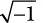
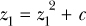

Aquí tienes algunos retos de programación que te ayudarán a aplicar mejor lo que has aprendido. Puedes encontrar ejemplos de soluciones en http://www.nostarch.com/doingmathwithpython/.
Antes he mencionado que matplotlib admite la creación de otras formas geométricas. El parche Polygon es especialmente interesante, ya que te permite dibujar polígonos con diferentes números de lados. He aquí cómo podemos dibujar un cuadrado (cada lado de longitud 4):
'''
Draw a square
'''
from matplotlib import pyplot as plt
def draw_square():
ax = plt.axes(xlim = (0, 6), ylim = (0, 6))
square = plt.Polygon([(1, 1), (5, 1), (5, 5), (1, 5)], closed = True)
ax.add_patch(square)
plt.show()
if __name__ == '__main__':
draw_square()
El objeto Polygon se crea pasando la lista de coordenadas de los vértices como primer argumento. Como estamos dibujando un cuadrado, pasamos las coordenadas de los cuatro vértices: (1, 1), (5, 1), (5, 5) y (1, 5). Al pasar closed=True le decimos a matplotlib que queremos dibujar un polígono cerrado, en el que los vértices inicial y final sean iguales.
En este reto, intentarás una versión muy simplificada del problema "círculos empaquetados en un cuadrado". ¿Cuántos círculos de radio 0,5 caben en el cuadrado producido por este código? ¡Dibuja y averígualo! La Figura 6-11 muestra el aspecto que tendrá la imagen final.
Figura 6-11: Círculos empaquetados en un cuadrado
El truco está en empezar por la esquina inferior izquierda del cuadrado -es decir, (1, 1)- y seguir añadiendo círculos hasta llenar todo el cuadrado. El siguiente fragmento muestra cómo puedes crear los círculos y añadirlos a la figura:
y = 1.5
while y < 5:
x = 1.5
while x < 5:
c = draw_circle(x, y)
ax.add_patch(c)
x += 1.0
y += 1.0
Cabe señalar que ésta no es la forma más óptima ni, en realidad, la única de introducir círculos en un cuadrado, y que los entusiastas de las matemáticas prefieren encontrar otras formas de resolver este problema.
El triángulo de Sierpiński, llamado así por el matemático polaco Wacław Sierpiński, es un fractal que consiste en un triángulo equilátero compuesto por triángulos equiláteros más pequeños incrustados en su interior. La Figura 6-12 muestra un triángulo de Sierpiński compuesto por 10.000 puntos.
Figura 6-12: Triángulo de Sierpiński con 10.000 puntos
Lo interesante aquí es que el mismo proceso que utilizamos para dibujar un helecho también dibujará el triángulo de Sierpiński; sólo cambiarán las reglas de transformación y su probabilidad. Así es como puedes dibujar el triángulo de Sierpiński: empieza con el punto (0, 0) y aplica una de las siguientes transformaciones:
Transformación 1:
xn+1 = 0,5xn
yn+1 = 0,5yn
Transformación 2:
xn+1 = 0,5xn + 0,5
yn+1 = 0,5yn + 0,5
xn+1 = 0,5xn + 1
yn+1 = 0,5yn
Cada una de las transformaciones tiene la misma probabilidad de ser seleccionada-1/3. Tu reto aquí es escribir un programa que dibuje el triángulo de Sierpiński compuesto por un determinado número de puntos especificados como entrada.
En 1976, Michel Hénon introdujo la función de Hénon, que describe una regla de transformación para un punto P(x, y) como sigue
P(x, y) → Q(y + 1 - 1,4x2, 0,3x)
Independientemente del punto inicial (siempre que no esté muy lejos del origen), verás que a medida que creas más puntos, éstos empiezan a situarse a lo largo de líneas curvas, como se muestra en la Figura 6-13.

Figura 6-13: Función de Hénon con 10.000 puntos
Tu reto aquí es escribir un programa para crear una gráfica que muestre 20.000 iteraciones de esta transformación, empezando por el punto (1, 1).
¡Mérito extra si escribes otro programa para crear una figura animada que muestre los puntos que empiezan a situarse a lo largo de las curvas! Consulta un ejemplo en https://www.youtube.com/watch?v=76ll818RlpQ.
Éste es un ejemplo de sistema dinámico, y las líneas curvas a las que parecen atraídos todos los puntos se denominan atractores. Para saber más sobre esta función, los sistemas dinámicos y los fractales en general, puedes consultar Fractales: A Very Short Introduction, de Kenneth Falconer (Oxford University Press, 2013).
Tu reto aquí es escribir un programa para dibujar el conjunto de Mandelbrot , otroejemplo de aplicación de reglas sencillas que conducen a una forma de aspecto complicado (ver Figura 6-14). Sin embargo, antes de establecer los pasos para hacerlo, primero aprenderemos sobre la función imshow() de matplotlib.

Figura 6-14: Conjunto de Mandelbrot en el plano entre (-2,5, -1,0) y (1,0, 1,0)
La función imshow() suele utilizarse para mostrar una imagen externa, como una imagen JPEG o PNG. Puedes ver un ejemplo en http://matplotlib.org/users/image_tutorial.html. Aquí, sin embargo, utilizaremos la función para dibujar una nueva imagen de nuestra propia creación mediante matplotlib.
Considera la parte del plano cartesiano donde x e y van de 0 a 5. Ahora, considera seis puntos equidistantes a lo largo de cada eje: (0, 1, 2, 3, 4, 5) a lo largo del eje x y el mismo conjunto de puntos a lo largo del eje y. Si tomamos el producto cartesiano de estos puntos, obtenemos 36 puntos equidistantes en el plano x-y con las coordenadas (0, 0), (0, 1) ... (0, 5), (1, 0), (1, 1) ... (1, 5) ... (5, 5). Digamos ahora que queremos colorear cada uno de estos puntos de con un tono de gris, es decir, algunos de estos puntos serán negros, otros blancos y otros se colorearán con un tono intermedio, elegido al azar. La Figura 6-15 ilustra el escenario.

Figura 6-15: Parte del plano x-y con x e y comprendidas entre 0 y 5. Hemos considerado 36 puntos en la región equidistantes entre sí y hemos coloreado cada uno con un tono de gris.
Para crear esta figura, tenemos que hacer una lista de seis listas. Cada una de estas seis listas constará a su vez de seis números enteros que van de 0 a 10. Cada número corresponderá al color de cada punto, siendo 0 el negro y 10 el blanco. A continuación, pasaremos esta lista a la función imshow() junto con otros argumentos necesarios.
Una lista también puede contener listas como miembros:
>>> l1 = [1, 2, 3]
>>> l2 = [4, 5, 6]
>>> l = [l1, l2]
Aquí creamos una lista, l, formada por dos listas, l1 y l2. Así, el primer elemento de la lista, l[0], es igual que la lista l1 y el segundo elemento de la lista, l[1], es igual que la lista l2:
>>> l[0]
[1, 2, 3]
>>> l[1]
[4, 5, 6]
Para referirnos a un elemento individual dentro de una de las listas de miembros, tenemos que especificar dos índices:l[0][1] se refiere al segundo elemento de la primera lista, l[1][2] se refiere al tercer elemento de la segunda lista, y así sucesivamente.
Ahora que sabemos cómo trabajar con una lista de listas, podemos escribir el programa para crear una figura similar a la de la Figura 6-15:
import matplotlib.pyplot as plt
import matplotlib.cm as cm
import random
➊ def initialize_image(x_p, y_p):
image = []
for i in range(y_p):
x_colors = []
for j in range(x_p):
x_colors.append(0)
image.append(x_colors)
return image
def color_points():
x_p = 6
y_p = 6
image = initialize_image(x_p, y_p)
for i in range(y_p):
for j in range(x_p):
➋ image[i][j] = random.randint(0, 10)
➌ plt.imshow(image, origin='lower', extent=(0, 5, 0, 5),
cmap=cm.Greys_r, interpolation='nearest')
plt.colorbar()
plt.show()
if __name__ == '__main__':
color_points()
La función initialize_image() en ➊ crea una lista de listas con cada uno de los elementos inicializados a 0. Acepta dos argumentos, x_p y y_p, que corresponden al número de puntos a lo largo del eje x y del eje y, respectivamente. Esto significa que la imagen de la lista inicializada estará formada por listas x_p, cada una de las cuales contendrá y_p ceros.
En la función color_points(), una vez recuperada la lista imagen de initialize_image(), asigna un entero aleatorio entre 0 y 10 al elemento image[i][j] en ➋. Cuando asignamos este número entero aleatorio al elemento, estamos asignando un color al punto del plano cartesiano que está a i pasos a lo largo del eje y y a j pasos a lo largo del eje x desde el origen. Es importante señalar que la función imshow() deduce automáticamente el color de un punto a partir de su posición en la lista image y no se preocupa de sus coordenadas x e y concretas.
A continuación, llama a la función imshow() en ➌, pasando image como primer argumento. El argumento de palabra clave origin='lower' especifica que el número de image[0][0] corresponde al color del punto (0, 0). El argumento de palabra clave extent=(0, 5, 0, 5) establece las esquinas inferior izquierda y superior derecha de la imagen en (0, 0) y (5, 5), respectivamente. El argumento de palabra clave cmap=cm.Greys_r especifica que vamos a crear una imagen en escala de grises.
El último argumento de palabra clave, interpolation='nearest', especifica que matplotlib debe colorear un punto para el que no se haya especificado el color con el mismo color que el más cercano a él. ¿Qué significa esto? Observa que sólo consideramos y especificamos el color para 36 puntos de la región (0, 5) y (5, 5). Como hay un número infinito de puntos en esta región, le decimos a matplotlib que establezca el color de un punto no especificado en el de su punto más cercano. Esta es la razón por la que ves "recuadros" de color alrededor de cada punto en la figura.
Llama a la función colorbar() para mostrar una barra de color en la figura que muestre qué número entero corresponde a cada color. Por último, llama a show() para mostrar la imagen. Ten en cuenta que, debido al uso de la función random.randint(), tu imagen se coloreará de forma diferente a la de la Figura 6-15.
Si aumentas el número de puntos a lo largo de cada eje ajustando x_p y y_p a, digamos, 20 en color_points(), verás una figura similar a la de la Figura 6-16. Observa que los cuadros de color se hacen más pequeños. Si aumentas aún más el número de puntos, verás que el tamaño de los recuadros se reduce aún más, dando la ilusión de que cada punto tiene un color diferente.
Figura 6-16: Parte del plano x-y con x e y comprendidas entre 0 y 5. Hemos considerado 400 puntos en la región equidistantes entre sí y hemos coloreado cada uno con un tono de gris.
Consideraremos el área del plano x-y comprendida entre (-2,5, -1,0) y (1,0, 1,0) y dividiremos cada eje en 400 puntos equidistantes. El producto cartesiano de estos puntos nos dará 1.600 puntos igualmente espaciados en esta región. Nos referiremos a estos puntos como(x1, y1),(x1, y2) ...(x400, y400).
Crea una lista, image, llamando a la función initialize_image() que vimos antes con x_p y y_p fijados en 400. A continuación, sigue estos pasos para cada uno de los puntos generados(xi, yk):
1. En primer lugar, crea dos números complejos, z1 = 0 + 0j y c = xi + yk j. (Recuerda que utilizamos j para .)
2. Crea una iteración de etiqueta y ponla a 0, es decir, iteration=0.
3. Crea un número complejo, .
4. Incrementa el valor almacenado en iteration en 1, es decir, iteration = iteration + 1.
5. Si abs(z1) < 2 y iteration < max_iteration, entonces vuelve al paso 3; si no, ve al paso 6. Cuanto mayor sea el valor de max_iteration, más detallada será la imagen, pero más tiempo tardará en crearse. Ajusta aquí max_iteration a 1.000.
6. Ajusta el color del punto(xi, yk) al valor de iteration-es decir, image[k][i] = iteration.
Una vez que tengas la lista image completa, llama a la función imshow() con el argumento de la palabra clave extent cambiado para indicar la región delimitada por (-2,5, -1,0) y (1,0, 1,0).
Este algoritmo suele denominarse algoritmo del tiempo de escape. Cuando se alcanza el número máximo de iteraciones antes de que la magnitud de un punto supere 2, ese punto pertenece al conjunto de Mandelbrot y se colorea de blanco. Los puntos que superan la magnitud en menos iteraciones se dice que "escapan"; no pertenecen al conjunto de Mandelbrot y se colorean de negro. Puedes experimentar disminuyendo y aumentando el número de puntos a lo largo de cada eje. Disminuyendo el número de puntos obtendrás una imagen granulada, mientras que aumentándolos obtendrás una imagen más detallada.